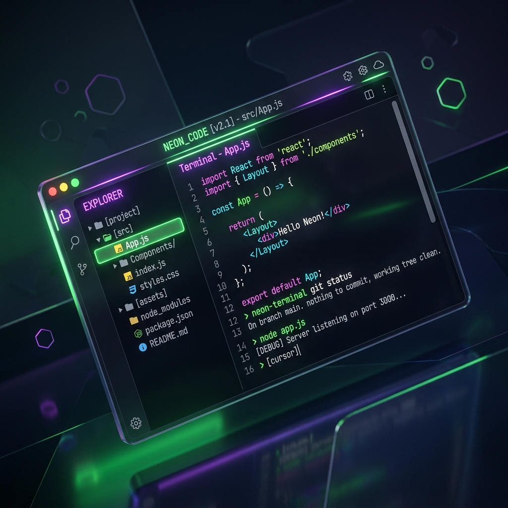

Experience a next-generation SSH client built for speed, security, and aesthetics. AES-256 encrypted vaults, real-time server telemetry, and integrated SFTP.
Available for macOS, Windows, and Linux.

Your passwords and private keys are never stored in plain text. VinTerm uses military-grade AES-256-GCM encryption with a Master Password.
Keep an eye on your infrastructure. Real-time CPU, Memory, and Disk usage polling directly integrated into the terminal status bar.
Manage files seamlessly alongside your terminal sessions. Upload, download, delete, and even edit remote files instantly.
Beautiful UI built with CSS variables. Switch between elegant Light and Dark modes with a single click, fully synced with the terminal engine.